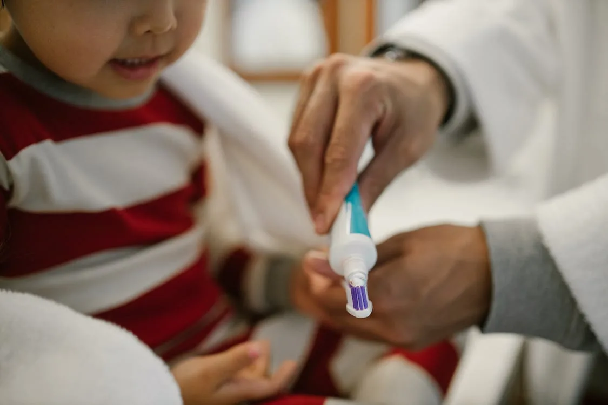
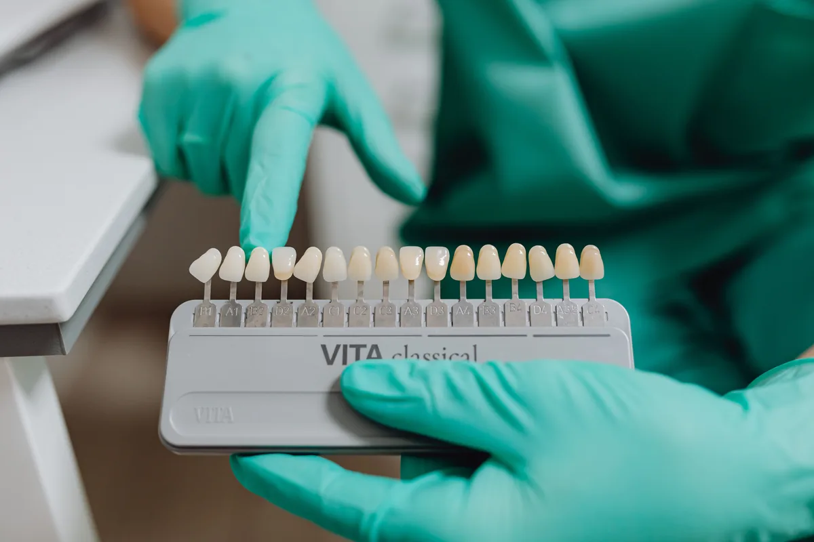
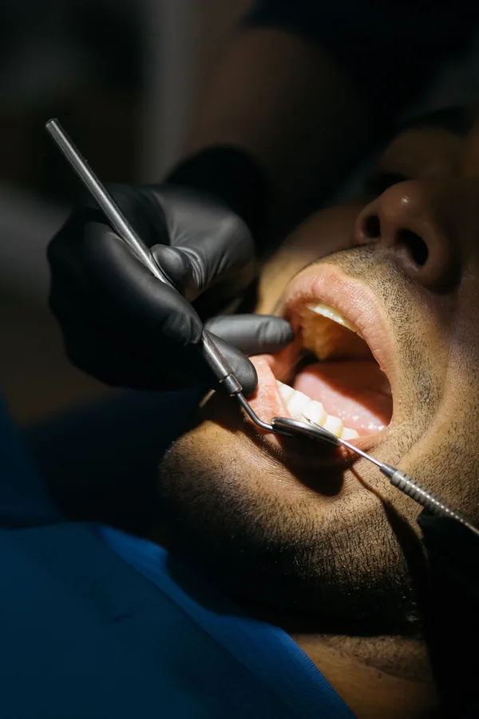

Restorative care
Prosthodontics, crowns, bridges, dentures, veneers and implant-supported restorations.
About Silwadi
Silwadi Dental Center has cared for patients in Abu Dhabi since 1980. Today it is a multi-specialty dental center where general dentists and specialists work across restorative, preventive, cosmetic and specialist dentistry.
The Silwadi story
Silwadi has served patients in Abu Dhabi since 1980. The centre’s work today spans routine dental care and specialist fields including prosthodontics, implantology, orthodontics, periodontics and endodontics.
Dr. Munir Silwadi is a Specialist Prosthodontist and Implantologist. His published professional profile states that, since 2000, he has run a multi-specialty dental center while focusing his practice on prosthodontics, implantology and CAD/CAM aesthetic dentistry.


Dr. Munir Silwadi
Dr. Munir Silwadi’s professional profile includes prosthodontics, implantology, full-mouth rehabilitation and CAD/CAM aesthetic dentistry. He holds a Canadian Dental Board Certificate, is a member of the Royal College of Dental Surgeons of Ontario, and is an International College of Dentists Fellow.
His clinical profile also includes computer-guided implant planning, immediate implants, sinus lift procedures, digital smile design and chairside CAD/CAM restorations.
View Dr. Munir’s profileWhat we do
Silwadi’s team covers a broad range of dental needs. Treatment is planned after examination and, where appropriate, patients can be referred within the centre to a relevant specialist.
Prosthodontics, crowns, bridges, dentures, veneers and implant-supported restorations.
Orthodontics, periodontics, endodontics, implantology and children’s dentistry.
Routine examinations, oral hygiene, preventive planning, whitening and cosmetic dentistry.
How Silwadi approaches care
The centre’s published approach emphasizes patient education, open communication and comfort. Dentists explain procedures, answer questions and discuss treatment options before care moves forward.
That approach applies whether the visit is for a routine check-up, a cosmetic concern or more complex specialist treatment.



Where to find us
Silwadi welcomes patients at Bani Yas Tower and Al Raha Mall. Visit the locations page for branch details and contact information.
Building 117 C Floor, Sultan Bin Zayed The First St, W Corniche Road, Abu Dhabi.
F14 & F15, Level 1, Al Raha Mall, Abu Dhabi.
Call reception or book a consultation online for help choosing the appropriate appointment.
Silwadi Dental Center
Learn more about the dentists and specialists at Silwadi, or browse the dental services available at the centre.